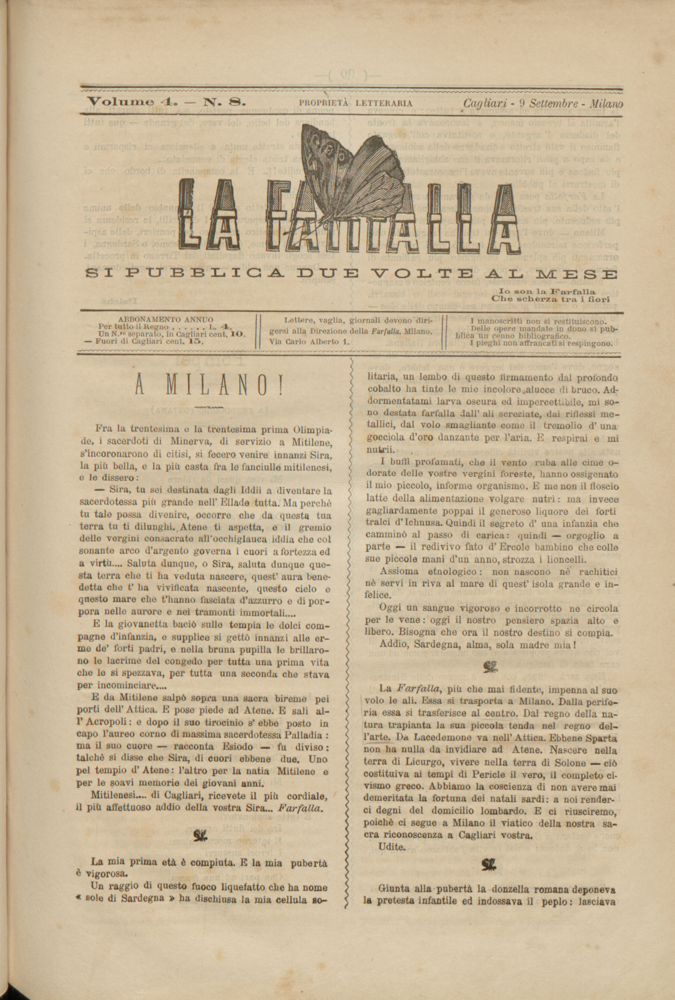
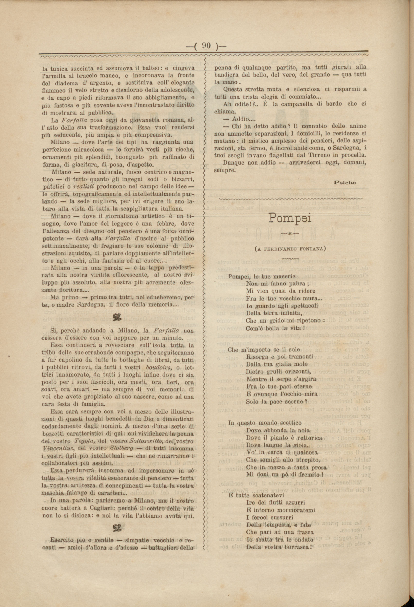

Tre testi da La Farfalla
L'articolo rende noto ai lettori il trasferimento della sede della redazione de La Farfalla da Cagliari a Milano, avvenuto poco tempo dopo la pubblicazione dell'articolo. Inizialmente l'autore paragona la rivista a Sira, personaggio della mitologia che, per diventare la migliore sacerdotessa della Grecia, deve lasciare Mitilene (sull'isola di Lesbo), dov'è nata e cresciuta, per Atene; poi la paragona a una fanciulla romana, che, per sancire il proprio passaggio dall'età infantile a quella adulta, indossava il peplo, il balteo e un diadema d'argento. Così La Farfalla, per "diventare grande", pur ricordando le proprie origini isolane, doveva lasciare Cagliari e la Sardegna e sbarcare a Milano, centro delle arti e dell'editoria nell'Italia di fine Ottocento.
Francesco Giarelli nacque a Piacenza nel 1844, si laureò in giurisprudenza ma si dedicò presto al giornalismo. La sua carriera ebbe una svolta nel 1870 a Milano, grazie a Felice Cavallotti: qui collaborò con la Gazzetta di Milano e, con lo pseudonimo di Don Lumachino, curò "I suoni dell'anima" sul Gazzettino rosa. Nel 1875, Cavallotti gli affidò la cronaca de La Ragione, dove Giarelli divenne un precursore del giornalismo moderno: trasformò il ruolo del cronista in inviato attivo e la cronaca in una forma di letteratura. Collaborò con figure come Victor Hugo e Giosuè Carducci, e con lo pseudonimo di Psiche denunciò i mali sociali su La Farfalla. Co-autore di Il ventre di Milano, tornò a Piacenza nel 1889 per scrivere la Storia di Piacenza. Negli ultimi anni fu consigliere comunale e assessore alla Pubblica Istruzione. Scrisse numerosi articoli e studi, e le sue memorie, Vent'anni di giornalismo, pubblicate nel 1896. Morì a Pontenure nel 1907, lasciando un'impronta significativa nel giornalismo italiano.


Fra la trentesima e la trentesima prima Olimpiade, i sacerdoti di Minerva, di servizio a Mitilene,
s'incoronarono di citisi, si fecero venire innanzi Sira,
la più bella, e la più casta fra le fanciulle mitilenesi,
e le dissero:
- Sira, tu sei destinata dagli Iddii a diventare la
sacerdotessa più grande nell'Ellade tutta. Ma perchè
tu tale possa divenire, occorre che da questa tua
terra tu ti dilunghi. Atene ti aspetta, e il gremio
delle vergini consacrate all'occhiglauca iddia che col
sonante arco d'argento governa i cuori a fortezza ed
a virtù.... Saluta dunque, o Sira, saluta dunque questa terra che ti ha veduta nascere, quest'aura benedetta che t'ha vivificata nascente, questo cielo e
questo mare che t'hanno fasciata d'azzurro e di porpora nelle aurore e nei tramonti immortali....
E la giovanetta baciò sulle tempia le dolci compagne d'infanzia, e supplice si gettò innanzi alle erme de' forti padri, e nella bruna pupilla le brillarono le lacrime del congedo per tutta una prima vita che le si spezzava, per tutta una seconda che stava per incominciare....
E da Mitilene salpò sopra una sacra bireme pei porti dell'Attica. E pose piede ad Atene. E salì all'Acropoli: e dopo il suo tirocinio s'ebbe posto in capo l'aureo corno di massima sacerdotessa Palladia: ma il suo cuore - racconta Esiodo - fu diviso: talchè si disse che Sira, di cuori ebbene due. Uno pel tempio d'Atene: l'altro per la natia Mitilene e per le soavi memorie dei giovani anni.
Mitilenesi... di Cagliari, ricevete il più cordiale, il più affettuoso addio della vostra Sira.... Farfalla
La mia prima età è compiuta. E la mia pubertà è vigorosa.
Un raggio di questo fuoco liquefatto che ha nome «sole di Sardegna» ha dischiusa la mia cellula solitaria, un lembo di questo firmamento dal profondo cobalto ha tinte le mie incolore alucce di bruco. Addormentarmi larva oscura ed impercettibile, mi sono destata farfalla dall'ali screziate, dai riflessi metallici, dal volo smagliante come il fremolio d'una gocciola d'oro danzante per l'aria. E respirai e mi nutrii.
I buffi profumati, che il vento ruba alle cime odorate delle vostre vergini foreste, hanno ossigenato il mio piccolo, informe organismo. E me non il floscio latte della alimentazione volgare nutrì: ma invece gagliardamente poppai il generoso liquore dei forti tralci d'Ichnusa. Quindi il segreto d'una infanzia che camminò al passo di carica: quindi - orgoglio a parte - il redivivo fato d'Ercole bambino che colle sue piccole mani d'un anno, strozza i lioncelli.
Assioma etnologico: non nascono nè rachitici nè servi in riva al mare di quest'isola grande e infelice.
Oggi un sangue vigoroso e incorrotto ne circola per le vene: oggi il nostro pensiero spazia alto e libero. Bisogna che il nostro destino si compia.
Addio, Sardegna, alma, sola madre mia!
La Farfalla, più che mai fidente, impenna al suo volo le ali. Essa si trasporta a Milano. Dalla periferia essa si trasferisce al centro. Dal regno della natura trapianta la sua piccola tenda nel regno dell'arte. Da Lacedemone va nell'Attica. Ebbene Sparta non ha nulla da invidiare ad Atene. Nascere nella terra di Licurgo, vivere nella terra di Solone - ciò costituiva ai tempi di Pericle il vero, il completo civismo greco. Abbiamo la coscienza di non avere mai demeritata la fortuna dei natali sardi: a noi renderci degni del domicilio lombardo. E ci riusciremo, poiché ci segue a Milano il viatico della nostra sacra riconoscenza a Cagliari vostra.
Udite.
Giunta alla pubertà la donzella romana deponeva la pretesa infantile ed indossava il peplo: lasciava la tunica succinta ed assumeva il balteo: e cingeva l'armilla al braccio maneo, e incoronava la fronte del diadema d'argento, e sostituiva coll'elegante fiammeo il velo stretto e disadorno della adolescente, e da capo a piedi riformava il suo abbigliamento, e più fastosa e più sovente aveva l'incontrastato diritto di mostrarsi al pubblico.
La Farfalla posa oggi da giovanetta romana, all'atto della sua trasformazione. Essa vuol rendersi più seducente, più ampia e più comprensiva.
Milano - dove l'arte dei tipi ha raggiunta una perfezione miracolosa - le fornirà vesti più ricche, ornamenti più splendidi, buongusto più raffinato di forma, di giacitura, di posa, d'aspetto.
Milano - sede naturale, fuoco centrico e magnetico - di tutto quanto gli ingegni sodi o bizzarri, patetici o realisti producono nel campo delle idee - le offrirà, topograficamente ed intellettualmente parlando - la sede migliore, per ivi erigere il suo labaro alla vista di tutta la scapigliatura italiana.
Milano - dove il giornalismo artistico è un bisogno, dove l'amor del leggere è una febbre, dove l'alleanza del disegno col pensiero è una forza onnipotente - darà alla Farfalla d'uscire al pubblico settimanalmente, di fregiare le sue colonne di illustrazioni squisite, di parlare doppiamente all'intelletto e agli occhi, alla fantasia ed al cuore....
Milano - in una parola - è la tappa predestinata alla nostra virilità efflorescente, al nostro sviluppo più assoluto, alla nostra più acremente olezzante fioritura....
Ma primo - primo fra tutti, noi educheremo, per te, o madre Sardegna, il fiore della memoria....
Sì, perchè andando a Milano, la Farfalla non cesserà d'essere con voi neppure per un minuto.
Essa continuerà a rovesciare, sull'isola tutta la tribù delle sue errabonde compagne, che seguiteranno a far capolino da tutte le botteghe di librai, da tutti i pubblici ritrovi, da tutti i vostri boudoirs, o lettrici innamorate, da tutti i luoghi infine dove ci sia posto per i suoi fascicoli, ora mesti, ora fieri, ora soavi, ora amari - ma sempre di voi memori: di voi che avete propiziato al suo nascere, come ad una cara festa di famiglia.
Essa sarà sempre con voi a mezzo delle illustrazioni di questi luoghi benedetti da Dio e dimenticati codardamente dagli uomini. A mezzo d'una serie di bozzetti caratteristici di qui: cui vivificherà la penna del vostro Tegola, del vostro Sottoscritto, del vostro Vincentius, del vostro Stolberg - di tutti insomma i vostri figli più intellettuali - che ne rimarranno i collaboratori più assidui.
Essa perdurerà insomma ad impersonare in sè tutta la vostra vitalità esuberante di pensiero - tutta la vostra arditezza di concepimenti - tutta la vostra maschia falange di caratteri...
In una parola: parleremo a Milano, ma il nostro cuore batterà a Cagliari: perché il centro della vita non lo si disloca: e noi la vita l'abbiamo avuta qui.
Esercito pio e gentile - simpatie vecchie e recenti - amici d'allora e d'adesso - battaglieri della penna di qualunque partito, ma tutti giurati alla bandiera del bello, del vero, del grande - qua tutti la mano.
Questa stretta muta e silenziosa ci risparmii a tutti una trista elegia di commiato...
Ah udite?!.. È la campanella di bordo che ci
chiama.
- Addio...
- Chi ha detto addio? Il connubio delle anime
non ammette separazioni. I domicilii, le residenze si
mutano: il mistico amplesso dei pensieri, delle aspirazioni sta fermo, è incrollabile come, o Sardegna, i
tuoi scogli invano flagellati dal Tirreno in procella.
Dunque non addio - arrivederci oggi, domani, sempre.
In letteratura il realismo è una tendenza a rappresentare la realtà oggettiva, sia cogliendone in modo problematico i risvolti politici e sociali nella vita quotidiana, sia inserendo personaggi in un preciso contesto storico e ambientale, anche remoto.
Va sotto questo nome un movimento letterario al quale diede vita in Milano, tra il 1860 e il 1870, un gruppo di scrittori e di artisti, diversi per temperamento, ma concordi nell'avversione al gusto dominante e alla tradizione, unanimi nella volontà di difendere l'autonomia dell'arte, di richiamarla a un più intimo contatto con la vita, a una più essenziale sincerità d'ispirazione, a una più spontanea immediatezza d'espressione. Sotto un certo aspetto la scapigliatura può essere considerata anche come un fenomeno politico e morale. Fu un tentativo d'agitare le acque della vita italiana stagnanti in un facile e ozioso quietismo, una reazione contro lo spirito borghese, pratico, utilitario, contro la povertà e la grettezza spirituale in cui si spegnevano gli eroici bagliori del Risorgimento.
Nella storia dell’arte, composizione, quadretto quasi impressionistico, in voga spec. nella seconda metà dell’800. In letteratura, racconto breve, che descrive con piglio realistico e vivezza impressionistica una situazione, un luogo, un carattere, tratti per lo più dalla vita di ogni giorno.
Il primo autore italiano a teorizzare il verismo fu Capuana, che parlò di "poesia del vero". Nella raccolta di saggi Il Teatro italiano contemporaneo. Studi sulla letteratura contemporanea (1872) la poetica del verismo che Capuana aveva elaborato si poneva come regola fondamentale quella di ritrarre direttamente dal vero. Lo scrittore doveva assumere dalla vita contemporanea la materia e narrare fatti realmente accaduti, senza limitarsi a ritrarli dall'esterno, ma ricostruendo la storia cogliendo e rivelando tutto il processo mediante il quale il fatto si era prodotto.

La protagonista della prima parte del testo "A Milano!", su "La Farfalla" del 9 settembre 1877: la fanciulla, che da Mitilene va ad Atene per diventare la migliore sacerdotessa della Grecia viene paragonata alla rivista stessa, che da Cagliari si trasferisce a Milano per crescere
Nato a
Ascra nel metà VIII secolo a.C.
Morto a
Ascra nel VII secolo a.C.
Il poeta più antico della Grecia continentale (forse inizi VII sec. a..C.), e il primo
la cui personalità ha carattere storico. Le notizie, non leggendarie, che la tradizione
antica ci ha conservato, sono desunte dai suoi scritti, specialmente dal poema le
Opere.
Presso i Romani, nome dell’eroe greco Eracle, famoso per la sua forza.
Nato a
Sparta nel IX secolo a.C.
Morto a
Sparta nel VIII secolo a.C.
Antichissimo legislatore spartano. Proprio per spiegare come egli potesse introdurre
in Sparta le sue leggi si riteneva che fosse stato membro d'una delle famiglie reali
e tutore di un re.
Nato a
Atene nel 640-30 a.C.
Morto a
Atene nel 560 a.C. circa
Legislatore ateniese (n. 640-30 a. C. - m. 560 circa), figlio di Execestide, di famiglia
nobile.
Nato a
Colargo, Attica nel 495 a.C. circa
Morto a
Atene nel 429 a.C.
Uomo politico ateniese (495 circa - 429 a. C.), figlio di Santippo, imparentato per
parte di madre con gli Alcmeonidi. Iniziò la sua carriera politica nel partito democratico
di Efialte, che, con l'ostracismo di Cimone (461) e il declino del partito conservatore
e dell'Areopago, conquistò la direzione della politica ateniese. Ma essendo stato
quasi subito assassinato Efialte, P. si trovò solo a guidare a un tempo il suo partito
e la politica ateniese, ciò che fece per oltre trent'anni (461-429) fondando il proprio
potere sulla annuale, libera rielezione nel consiglio degli strateghi. In politica
estera P. si propose come ultima mira il predominio ateniese sull'intera Grecia.
Pseudonimo di un collaboratore della rivista La Farfalla. Nome reale e dati anagrafici sono attualmente sconosciuti
Pseudonimo di un collaboratore della rivista La Farfalla. Nome reale e dati anagrafici sono attualmente sconosciuti
Pseudonimo di un collaboratore della rivista La Farfalla. Nome reale e dati anagrafici sono attualmente sconosciuti
Grecia
Città della Grecia (36.196 ab. nel 2001), capoluogo del nomo e dell’isola di Lesbo.
Sorge sulla costa orientale, ad anfiteatro sopra un promontorio che era in origine
un’isola, già in epoca classica congiunta alla riva. Mercato di agrumi, olio, spugne.
Grecia
Penisola della Grecia orientale, tra i golfi Saronico (a SO) e Petaliòn (a E). Costituisce
un nomo, con capoluogo Atene, la cui conurbazione è però amministrativamente autonoma.
Grecia
Città (3.155.600 ab. nel 2018, considerando l’intera agglomerazione urbana, la Grande
Atene, che include anche il Pireo); capitale della Grecia e capoluogo del nomo dell’Attica.
È al centro di una piana costiera lungo la quale tuttavia si allineano alcuni rilievi
(Imetto, 1026 m, a SE), solcata dai torrenti Cefiso e Ilisso. La città alla costituzione
dello Stato greco (1834) contava appena 10.000 abitanti e si limitava a quello che
è ora il quartiere della Plaka, a NE dell’Acropoli. Dopo la sua proclamazione a capitale
della Grecia, estesi lavori di ampliamento e ammodernamento le conferirono aspetto
monumentale, secondo uno schema urbanistico regolare, in cui spiccano edifici pubblici
e grandi piazze.
Grecia
L'acropoli di Atene è un sito archeologico situato su uno sperone roccioso che domina
la città di Atene; conserva i resti monumentali di numerosi edifici dell'Età antica,
di grande rilevanza architettonica e storica, tra cui il Partenone, il più famoso
monumento dell'antica Grecia e una delle massime espressioni dell'architettura greca
classica.
Italia
Comune della Sardegna meridionale (133,5 km2 con 149.883 ab. al censimento del 2011,
divenuti 151.005 secondo rilevamenti ISTAT del 2020, detti cagliaritani), città metropolitana
e capoluogo di regione; sede del governo regionale sardo.
Italia
Regione dell’Italia insulare (24.100 km2 con 1.611.621 ab. nel 2020, ripartiti in
377 Comuni; densità 67 ab./km2), costituita dall’isola omonima (23.833 km2; la seconda,
per superficie, del Mediterraneo) e da diverse isole minori, le più notevoli delle
quali fronteggiano le coste nord-orientali (Arcipelago della Maddalena, Tavolara),
nord-occidentali (Asinara) e sud-occidentali (Sant’Antioco, San Pietro). È situata
al centro del bacino occidentale del Mediterraneo, a uguale distanza (350-360 km)
dalla costa ligure, dal Mezzogiorno francese, dalle Baleari. Il capoluogo di regione
è Cagliari. La Sardegna è un'isola del mar Mediterraneo occidentale, la seconda per estensione
e per popolazione dopo la Sicilia. Amministrativamente è territorio della Repubblica
Italiana e rientra nell'omonima regione a statuto speciale.
Italia
Comune della Lombardia (181,67 km2 con 1.406.242 ab. nel 2020), capoluogo di regione
e città metropolitana, è la seconda città in Italia, dopo Roma, e costituisce la massima
concentrazione delle forme più moderne e dinamiche dell’economia del paese.
Grecia
Cittadina della Grecia, nel Peloponneso meridionale, capoluogo del nomo della Laconia,
sulle rive del fiume Eurota.
Fondata a Cagliari da Angelo Sommaruga, con cadenza quindicinale, «La Farfalla» vide la luce il 27 febbraio 1876. Si presentava al pubblico «semplice, pulita, senza fregi e senza fronzoli», quasi del tutto priva di quelle novità grafiche che caratterizzeranno le riviste successive. I maggiori collaboratori furono, oltre Giarelli, autore della maggior parte degli articoli, Ottone Bacaredda, Felice Cameroni, Paolo Valera, Ferdinando Fontana, Cesario Testa, Domenico Milelli, Remigio Zena. Nel 1877 Sommaruga ritornò a Milano, portando con sé la rivista. Il primo numero milanese del 30 settembre uscì con una nuova testata che preannunciava lo stile liberty: un disegno di Tranquillo Cremona che raffigurava una graziosa fanciulla incastonato tra le prime due lettere del titolo.